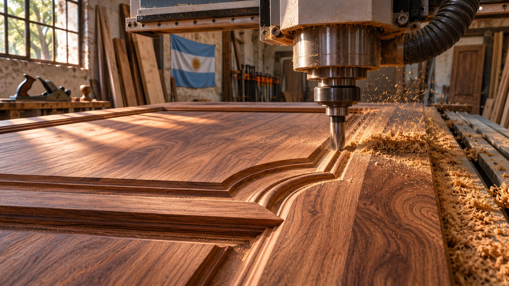

Diseño del frente
Tomá como punto de partida un modelo del taller o compartí una referencia para consultar si el dibujo se puede reproducir.
Elegir el dibujo es parte del proyecto. La abertura, la luz del ambiente y el uso que va a tener la puerta también orientan la elección.
Consultar un proyecto ↗
Tomá como punto de partida un modelo del taller o compartí una referencia para consultar si el dibujo se puede reproducir.
Indicá el ancho y el alto aproximados de la abertura. Una foto del marco ayuda a entender el espacio disponible.
Contá qué tono buscás y si la puerta estará al resguardo o expuesta. Consultá al taller por las opciones para ese uso.